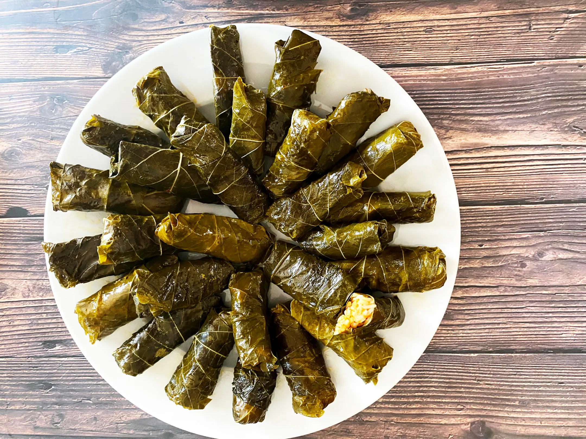

Home
Sarma

Description
Sarma is a beloved dish in Turkish cuisine made by carefully wrapping grape leaves around a flavorful mixture of rice, herbs, and spices. The name comes from the Turkish verb “sarmak,” meaning “to wrap” or “to roll,” which perfectly describes the dish’s delicate preparation. Typically, the filling includes rice, onions, olive oil, pine nuts, and currants, seasoned with fresh herbs like dill, parsley, and mint. Each roll is neatly packed, then slowly cooked until tender, allowing the flavors to blend beautifully.
Sarma is often served cold as part of a mezze spread or enjoyed as a light meal on its own, drizzled with olive oil and a squeeze of lemon. In Turkey, it’s a symbol of patience, tradition, and family gatherings — often prepared together with loved ones in the kitchen. The balance of tangy grape leaves and aromatic filling makes sarma a true expression of Mediterranean elegance and Turkish hospitality.
Ingredients
- 1 jar grape leaves (about 8–10 oz / 225–300 g, rinsed and drained)
- 1 cup uncooked rice (short- or medium-grain works best)
- 1 large onion, finely chopped
- ¼ cup olive oil (plus more for drizzling)
- 1 tablespoon tomato paste (optional, for a deeper flavor)
- 2 tablespoons pine nuts (optional, for texture)
- 2 tablespoons currants or raisins (optional, for a touch of sweetness)
- ½ teaspoon salt (adjust to taste)
- ½ teaspoon black pepper
- ½ teaspoon allspice (optional)
- 1 tablespoon dried mint or a handful of fresh mint, chopped
- 2 tablespoons chopped fresh parsley
- Juice of 1 lemon (plus extra slices for cooking)
- 1–1½ cups hot water (for cooking the rolls)
Steps
- Prepare the grape leaves: If you’re using jarred grape leaves, rinse them well under cold water to remove excess brine. Place them in hot water for about 2–3 minutes to soften, then drain and set aside on a plate. Pat dry gently with paper towels.
- Make the filling: In a pan, heat ¼ cup olive oil over medium heat. Add the chopped onion and sauté for about 3–4 minutes until soft and translucent. Stir in the rice and cook for another 2–3 minutes while stirring so it becomes lightly coated with oil.
- Add flavorings: Mix in the tomato paste (if using), pine nuts, currants, salt, black pepper, allspice, mint, and parsley. Add about ½ cup hot water, stir, and cook the mixture for 5–6 minutes until the rice absorbs the liquid but is still slightly undercooked. Remove from heat and let it cool for about 10 minutes.
- Roll the sarmas: Lay one grape leaf shiny side down on a clean surface. Place about 1 teaspoon of filling near the stem end of the leaf. Fold the sides inward over the filling, then roll tightly (but not too tight — the rice will expand as it cooks). Repeat with the remaining leaves and filling.
- Arrange in the pot: Line the bottom of a wide pot with a few leftover or torn grape leaves (this prevents sticking and burning). Arrange the rolled sarmas tightly in layers, seam side down.
- Add liquid and cook: Drizzle the top with a little olive oil, place lemon slices over the rolls, and pour in 1–1½ cups of hot water — just enough to barely cover them. Place a heatproof plate over the rolls to keep them from unrolling. Cover the pot with a lid.
- Simmer gently: Cook over low heat for about 35–45 minutes, until the rice is fully cooked and the flavors meld. Let them cool in the pot before serving.
- Serve: Transfer to a plate, drizzle with extra olive oil and lemon juice, and serve at room temperature or chilled. Sarma pairs perfectly with yogurt or as part of a mezze platter.